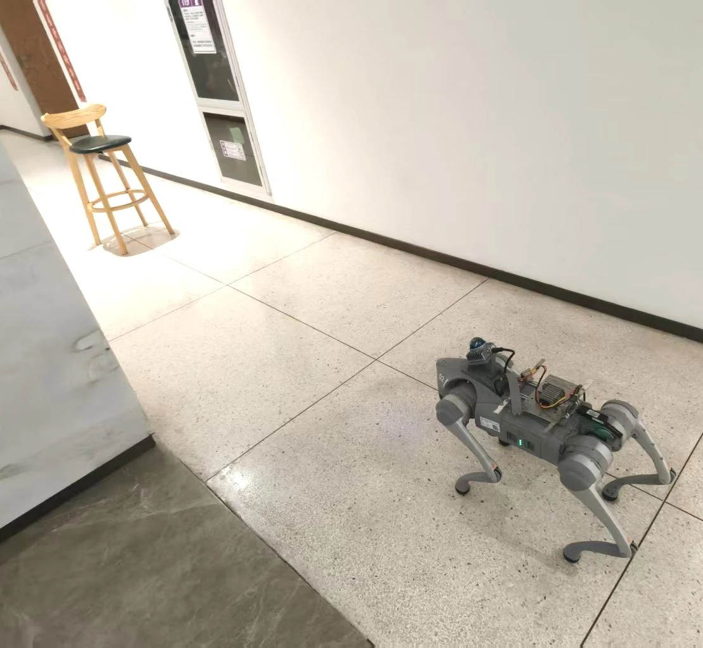
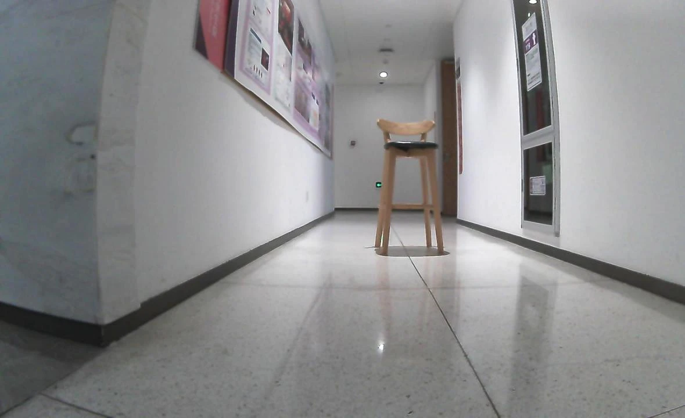
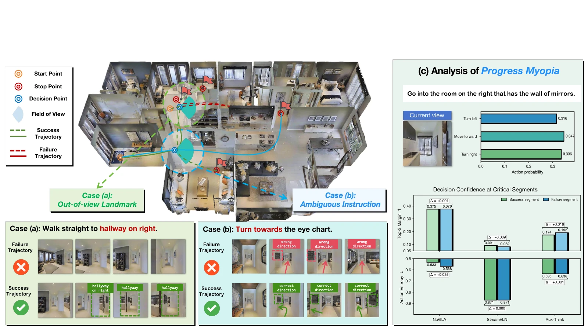
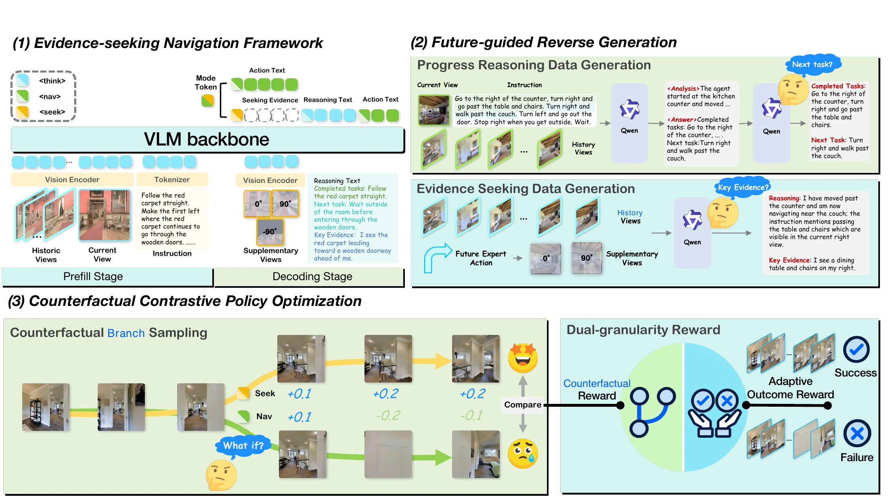
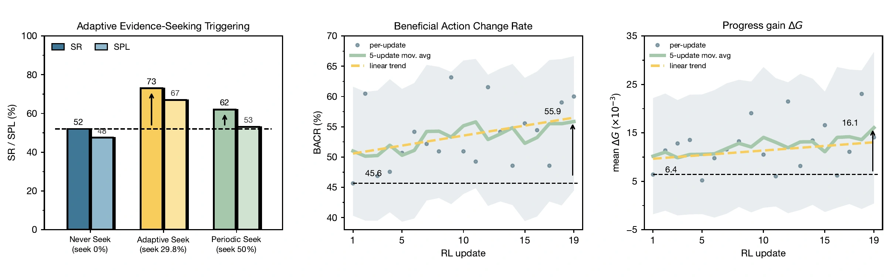
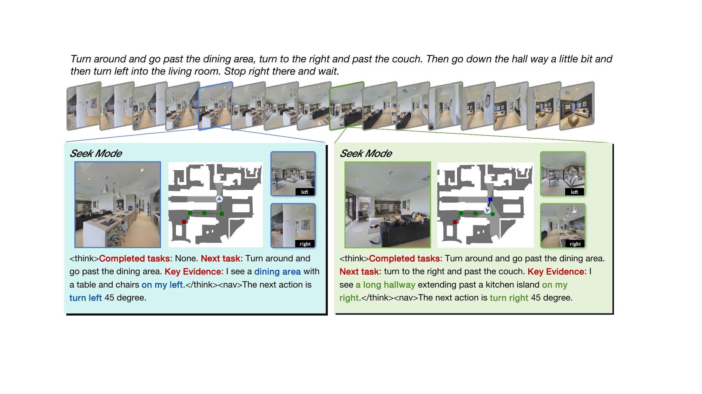

Seek Before You Move:Evidence Seeking for Progress Grounding
in Vision-Language Navigation
TL;DR SeekVLN learns when to acquire missing visual evidence and uses it to ground task progress before taking the next navigation action.

Robot view
Acquired evidence / left viewAbstract
Vision-Language Navigation (VLN) requires agents to continuously ground task progress from long-horizon instructions and partial egocentric observations. Existing VLM-based navigation agents typically reason only over available observations and may remain confident even when task-relevant evidence is missing. We term this failure mode Progress Myopia: the agent fails to recognize unreliable progress grounding and continues acting on insufficient evidence.
We propose SeekVLN, an evidence-seeking framework that couples semantic progress reasoning with active acquisition of task-relevant observations. Future-guided Reverse Generation (FRG) uses future expert actions to augment offline expert trajectories with supplementary views and evidence annotations. Supervised fine-tuning establishes a prior for evidence seeking and progress reasoning without additional expert interaction. Counterfactual Contrastive Policy Optimization (C2PO) then compares evidence-seeking and direct-navigation branches from the same state, assigning credit to seeking decisions based on their subsequent navigation benefit.
On the validation-unseen splits, SeekVLN improves success rate over the base model by 12.7 percentage points on R2R-CE and 7.5 percentage points on RxR-CE. Simulated and real-world evaluations exhibit evidence-seeking behavior for more reliable progress grounding.
1. Introduction
Reliable navigation requires an agent to determine which instruction subgoals have been completed and where to go next. Partial egocentric observations and ambiguous instructions may leave the agent without the evidence needed to make this decision. A landmark can lie outside the current field of view, or a fork can present multiple plausible directions.
Representative navigation models show similar decision confidence on matched successful and failed segments. This motivates Progress Myopia: an agent can continue acting confidently despite unreliable progress grounding. SeekVLN addresses this limitation by learning to acquire task-relevant observations before deciding how to move.

3. Methodology
SeekVLN combines dual-mode navigation with two-stage training: supervised fine-tuning on FRG annotations, followed by reinforcement fine-tuning with C2PO.

3.1 Evidence-Seeking Navigation Framework
At each decision, the policy receives the instruction, current observation, and sampled visual history. It selects NAV to predict a navigation action directly, or SEEK to acquire supplementary left, front, and right views. After seeking, it identifies key evidence, reasons about completed and upcoming subgoals, and predicts the next action.
3.2 Future-Guided Reverse Generation
FRG reasons backward from future expert actions to determine where supplementary observations may be useful. An annotator VLM identifies task-relevant evidence in the selected views and produces structured progress annotations. These annotations augment offline expert trajectories, establishing an evidence-seeking prior through supervised fine-tuning without additional expert interaction.
3.3 Counterfactual Contrastive Policy Optimization
Whenever the policy chooses to seek during reinforcement fine-tuning, C2PO clones the simulator state, observation history, and model context. It compares the factual seeking branch with a counterfactual branch whose initial decision is forced to direct navigation. The difference in short-horizon progress supplies a contrastive reward, combined with an episode-level adaptive outcome reward. Counterfactual branch rollouts are used only during training.
4. Experiments
4.1 Experimental Setting
Experiments use Habitat with Matterport3D scenes and the validation-unseen splits of R2R-CE and RxR-CE. Evaluation reports Navigation Error (NE), Oracle Success Rate (OSR), Success Rate (SR), Success weighted by Path Length (SPL), and normalized Dynamic Time Warping (nDTW), following the respective benchmark protocols.
SeekVLN is initialized from Aux-Think. FRG supervision is constructed from 4,000 R2R-CE training episodes, followed by C2PO reinforcement fine-tuning on 640 sampled training episodes. Training and evaluation details are provided in the manuscript.
4.2 Main Results
FRG-SFT improves SR from 54.8 to 61.0 on R2R-CE and from 52.2 to 55.7 on RxR-CE. C2PO-RFT further increases SR to 67.5 and 59.7, respectively. Relative to the base model, the full approach improves SR by 12.7 and 7.5 percentage points, and SPL by 14.5 and 10.1 points.
4.3 Deep Dive into Evidence-Seeking Behavior
Adaptive triggering. On a 100-episode R2R-CE validation-unseen subset, adaptive seeking reaches 73% SR and 67% SPL with a 29.8% seek rate. Never seeking reaches 52% SR and 48% SPL; periodic seeking reaches 62% SR and 53% SPL with a 50% seek rate. This controlled subset analysis is separate from the full benchmark results in Table 1.

Evidence usefulness. During reinforcement fine-tuning, the beneficial action change rate increases from 45.6% to 55.9%, while mean short-horizon progress gain rises from 6.4 × 10−3 to 16.1 × 10−3. These measurements examine whether acquired evidence improves subsequent navigation.
4.4 Qualitative Results

In the real-world rollout shown at the top of this page, the forward observation does not reveal the destination chair. SeekVLN acquires a side view, identifies the chair on its left, and completes the task. This qualitative demonstration illustrates evidence seeking under partial observation and instruction ambiguity; it does not establish a real-world benchmark success rate.
5. Conclusion
SeekVLN addresses Progress Myopia through active evidence seeking for reliable progress grounding. FRG derives an initial behavior prior from offline demonstrations, and C2PO refines seeking decisions through counterfactual credit assignment. Benchmark results and qualitative rollouts show the value of learning when to acquire evidence and how to use it for navigation under partial observation.
BibTeX
Download .bibManuscript citation. Publication metadata will be updated when available.
@misc{seekvln2026,
title = {Seek Before You Move: Evidence Seeking for Progress Grounding in Vision-Language Navigation},
author = {Wang, Zhimin and Zhu, Meiyuan and Kang, Linjia and Wu, Duo and Wang, Yajun and Ni, Yuan and Wang, Xiaohang and Pan, Tianlu and Jiang, Jingyan and Wang, Yaowei and Wang, Zhi},
year = {2026},
url = {https://zhiminwangss.github.io/seekvln-project/},
note = {Research manuscript}
}